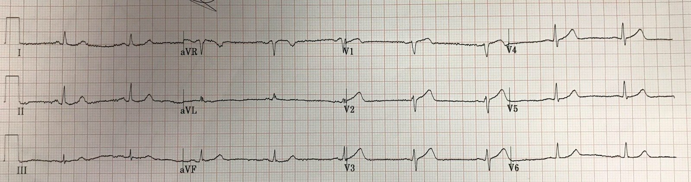
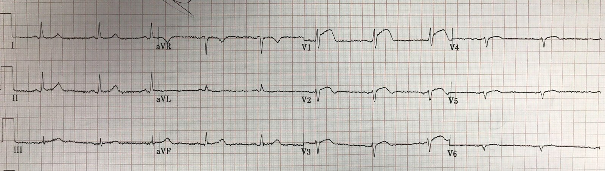
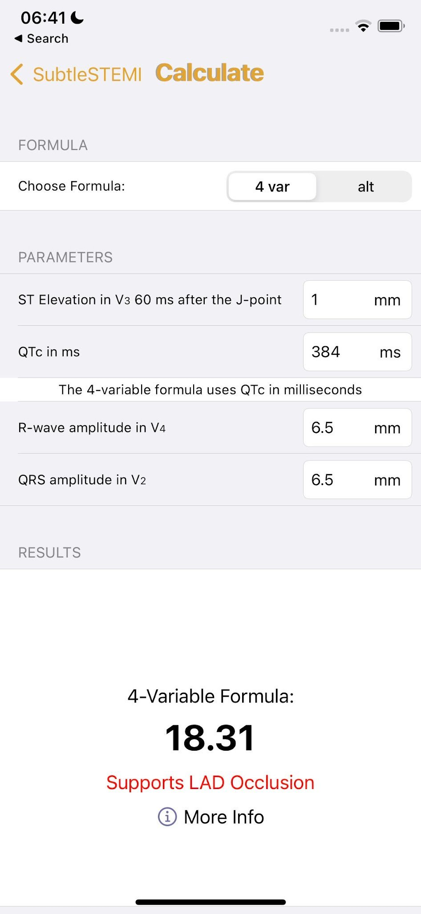
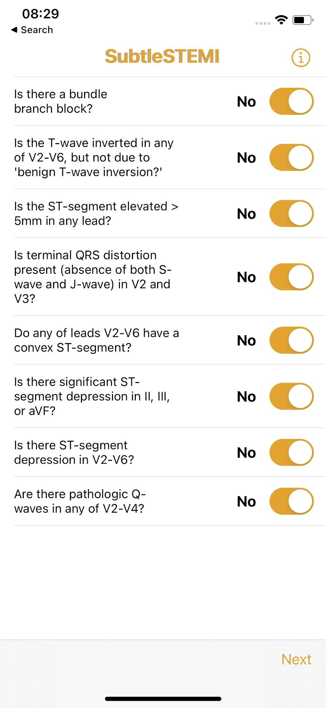
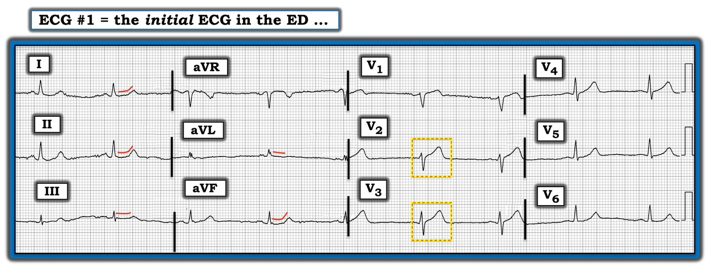
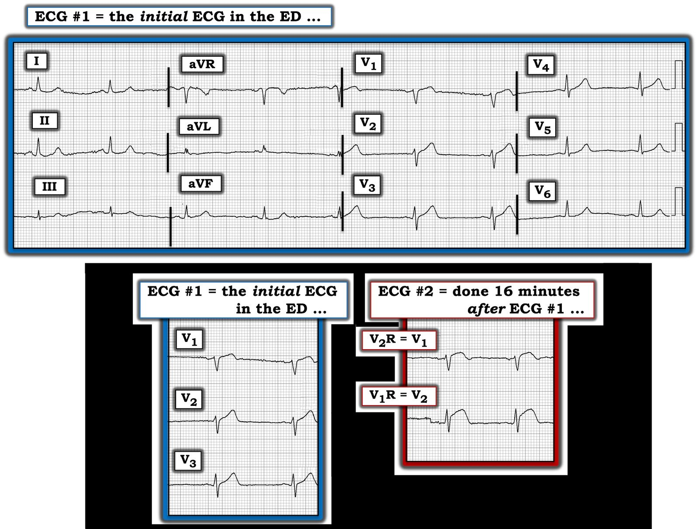

04/07/2022 — Phải ghi điện tâm đồ đúng thời điểm, nếu không sẽ bỏ sót nhồi máu cơ tim do tắc (OMI).
Bản dịch tiếng Việt của bài "The ECG must be recorded at the right time, or the Occlusion (OMI) will be missed." – Dr. Smith’s ECG Blog. Giữ nguyên toàn bộ 8 hình ảnh của bản gốc.
Ca này do một giảng viên của chúng tôi, Steven Souchtchenko, gửi đến; anh từng được tôi đào tạo, phần lớn thời gian làm việc tại một bệnh viện khác và đôi khi làm việc cùng chúng tôi tại Hennepin.
Ca bệnh:
Nữ 53 tuổi, đau ngực ngắt quãng (stuttering) trong 2 ngày, tối nay đột ngột nặng lên cấp tính, hiện đau mức 10/10, kiểu đè ép, lan ra cánh tay trái.


Bạn nghĩ gì?
Steven viết:
“Tôi gọi đây là “OMI” dựa trên sóng T tối cấp.” (Bác sĩ Souchtchenko hiểu rằng sóng T tối cấp hoàn toàn không được xác định bởi chiều cao của nó, thậm chí cũng không phải bởi kích thước và độ “đầy đặn” (bulky) của nó (dù các sóng T này đúng là “đầy đặn”), mà bởi kích thước của nó tương xứng với QRS).
“Khoa tim mạch không tin tôi. Tôi đã ghi một điện tâm đồ bên phải 16 phút sau đó.” Đây là điện tâm đồ bên phải mà anh đã ghi:


Hãy nhớ rằng trên điện tâm đồ bên phải, V1R = V2 trên điện tâm đồ bên trái, và V2 = V1.
Vì vậy ở đây V1 đang phản ánh V2
Hãy nhìn lại điện tâm đồ đầu tiên và dùng công thức 4 biến để phân biệt ST chênh lên bình thường ở V2-V4 với ST chênh lên (STE) ở V2-V4 do tắc LAD:

Từ ứng dụng iPhone “SubtleSTEMI”, dùng công thức 4 biến:
Có một ứng dụng miễn phí cho Android tên là “Smith ECG”


18,2 là điểm cắt chính xác nhất, với giá trị trên 18,2 có độ đặc hiệu khoảng 87% đối với tắc LAD. Như với mọi quy tắc nhị phân, giá trị càng gần điểm cắt thì càng kém tin cậy.
Công thức này chính xác hơn RẤT NHIỀU (nhạy hơn và đặc hiệu tương đương) so với các “tiêu chuẩn” ST chênh lên.
Lưu ý rằng có nhiều tiêu chí loại trừ; các tiêu chí loại trừ là những đặc điểm đặc hiệu cho tắc LAD đến mức nếu đưa những ca như vậy vào thì sẽ nguy hiểm:


Những lý do khiến công thức này tốt hơn nhiều so với ST chênh lên trong chẩn đoán tắc LAD:
1. Nó tính đến tình trạng QT kéo dài trong thiếu máu cục bộ
2. Nó tính đến tính tương xứng (ST chênh lên chỉ có ý nghĩa khi xét tương xứng với kích thước QRS, được đo bằng sóng R ở V4 và QRS ở V2).
3. ST chênh lên tại thời điểm 60 ms sau điểm J không chỉ đo mức ST chênh lên mà còn đo độ dốc lên của đoạn ST, yếu tố dự đoán kích thước sóng T
Một lần nữa, để xem nhiều ví dụ sử dụng công thức này, hãy truy cập bài blog này:
12 Example Cases of Use of 3- and 4-variable formulas, plus Simplified Formula, to differentiate normal STE from subtle LAD occlusion (mười hai ca ví dụ sử dụng công thức ba biến và bốn biến, cùng công thức đơn giản hóa, để phân biệt ST chênh lên bình thường với tắc LAD kín đáo)
Ca bệnh tiếp diễn
Troponin I ban đầu trả về là 0,146 ng/mL
Bệnh nhân được đưa đi chụp mạch vành:
Hẹp LAD 95% với dòng chảy TIMI-3. Tổn thương đã được đặt stent.
Troponin I sau thông tim (nhưng chưa chắc là giá trị đỉnh) là 0,846 ng/mL. Mức này không cao lắm đối với OMI, nhưng có thể gặp nếu động mạch chỉ bị tắc trong thời gian ngắn (dù do can thiệp rất nhanh hay do tái tưới máu tự phát).
Trong các nghiên cứu của chúng tôi (xem nghiên cứu này), chúng tôi định nghĩa OMI là:
1) Dòng chảy TIMI 0-2, hoặc
2) Có tổn thương thủ phạm + dòng chảy TIMI-3 + troponin đỉnh ít nhất 10,0 ng/mL đối với troponin I, 1,0 ng/mL đối với troponin T, hoặc 1000 ng/L đối với troponin T độ nhạy cao (hs trop T).
Vì vậy, theo các phương pháp nghiên cứu này, ca này sẽ được xếp vào loại “dương tính giả”. Nhưng rõ ràng đây không phải là dương tính giả!! Nói cách khác, các phương pháp nghiên cứu này tạo ra những ca dương tính giả giả. Đây là một hạn chế tất yếu của nghiên cứu, bắt nguồn từ việc chúng ta không ghi điện tâm đồ cùng lúc với chụp mạch vành, và huyết khối là một quá trình động, với cục huyết khối luân phiên tự ly giải rồi lại lan rộng.
Tuy vậy, chúng tôi vẫn phải báo cáo những ca này là dương tính giả trong các bài báo của mình, dù thực ra chúng là dương tính thật đối với OMI (giả của giả = thật).
Thời điểm ghi điện tâm đồ:
Nếu điện tâm đồ này được ghi vào một thời điểm khi đã có dòng chảy TIMI-3 trong một khoảng thời gian dài, thì OMI sẽ không bộc lộ rõ. Bệnh nhân sẽ có một STEMI thoáng qua không được ghi lại và có lẽ sẽ tắc lại vào lúc nửa đêm. Đây là lý do vì sao việc cố gắng ghi điện tâm đồ trong lúc đau là rất quan trọng, chứ không chỉ SAU khi hết đau hoặc trong lúc cơn đau đang thuyên giảm dần.

===================================
Bình luận của KEN GRAUER, MD (4/7/2022):
===================================
Tôi thích ca này của bác sĩ Souchtchenko và bác sĩ Smith — vì nó cung cấp thêm một ví dụ nữa về trường hợp có chỉ định kích hoạt phòng thông tim (cath lab). Với bệnh sử đau ngực rất đáng lo ngại trong ca hôm nay — bác sĩ can thiệp lẽ ra không nên nghi ngờ nhu cầu thông tim kịp thời dựa trên điện tâm đồ ban đầu, mà để rõ ràng tôi đã trình bày lại trong Hình 1.
- Ngoài việc thỏa công thức 4 biến của bác sĩ Smith ủng hộ tắc LAD — tôi cho rằng có bất thường sóng ST-T phù hợp với ít nhất là khả năng có (nếu không muốn nói là nhiều khả năng) OMI LAD cấp ở ít nhất 9/12 chuyển đạo (Hình 1).


VÌ SAO có chỉ định thông tim kịp thời:
Bác sĩ Souchtchenko đã lo ngại một cách xác đáng về sóng T tối cấp trên điện tâm đồ ban đầu này.
- Khi đối mặt với những dấu hiệu điện tâm đồ kín đáo-nhưng-chắc chắn-có-mặt (như trong ca hôm nay) — tôi thiên về việc tập trung đánh giá vào những chuyển đạo mà tôi biết là bất thường rõ ràng. Trong Hình 1 — tôi đã khoanh 2 chuyển đạo có sóng ST-T bất thường rõ rệt nhất trong các khung chữ nhật ĐỎ-VÀNG. Ở một bệnh nhân có đau ngực mới xuất hiện đáng lo ngại — sóng T ở chuyển đạo V2 rõ ràng không tương xứng so với phức bộ QRS ở chuyển đạo này (tức là, sóng T ở V2 cao vượt hẳn sóng R tương ứng của nó — với sóng T đầy đặn hơn ở đỉnh và rộng hơn ở đáy so với bình thường).
- LƯU Ý: Dù sóng T ở chuyển đạo V2 có thể trông không cao lắm — điều quan trọng là tính tương xứng. Phức bộ QRS ở V2 khá nhỏ — và so với kích thước nhỏ của QRS này — không còn nghi ngờ gì rằng sóng T ở chuyển đạo này rõ ràng là quá lớn.
- Dù mức độ không tương xứng ít hơn một chút — sóng T ở chuyển đạo V3 vẫn “quá cao” (bằng biên độ sóng R ở chuyển đạo này) — với đáy rộng-hơn-mong-đợi.
- Theo nguyên tắc “các chuyển đạo lân cận” (tức là, biết rằng sóng ST-T ở các chuyển đạo V2,V3 là tối cấp cho đến khi chứng minh được điều ngược lại) — tôi cho rằng sóng T ở chuyển đạo V4 có lẽ cũng “quá đầy đặn” (hypervoluminous). Nếu xét riêng — chuyển đạo V1 có thể không nhất thiết bị coi là “bất thường” — nhưng phần lớn trường hợp, một đoạn khởi đầu thẳng với sóng T dương cao 1,5 mm sẽ không gặp ở chuyển đạo này (vì vậy, do nó nằm sát chuyển đạo V2 vốn chắc chắn bất thường — tôi cho rằng nhiều khả năng sóng ST-T ở chuyển đạo V1 có lẽ cũng là tối cấp).
- Các thay đổi ở chuyển đạo chi còn kín đáo hơn nữa — nhưng dù vậy vẫn hiện diện rõ ràng. Dù hoàn toàn thừa nhận rằng ST thẳng đuỗn (được đánh dấu trong Hình 1 bằng các đường ĐỎ) nếu xét riêng thì không đặc hiệu — trong bối cảnh một bệnh nhân có bệnh sử đau ngực rất đáng lo ngại + ít nhất 2 (nếu không muốn nói là 4) chuyển đạo ngực cho thấy sóng T tối cấp — tôi diễn giải những bất thường ở chuyển đạo chi này là bổ sung thêm bằng chứng ủng hộ nghi ngờ OMI cấp cho đến khi chứng minh được điều ngược lại.
Điện tâm đồ ghi lại:
16 phút sau khi ghi điện tâm đồ #1 — bác sĩ Souchtchenko đã ghi một điện tâm đồ bên phải. Như đã nêu ở trên — trên điện tâm đồ bên phải, chuyển đạo V2R tương đương với chuyển đạo V1 trên điện tâm đồ bên trái (và chuyển đạo V1R tương đương với chuyển đạo V2 trên điện tâm đồ bên trái).
- Để rõ ràng — tôi đã phóng to 2 chuyển đạo này từ điện tâm đồ #2 ( = điện tâm đồ bên phải) — để chúng ta có thể đánh giá tác động của điện tâm đồ ghi lại 16 phút sau đó lên các chuyển đạo V1 và V2 (Xem Hình 2).


Sự khác biệt sau 16 phút:
Từ Hình 2 hẳn đã rõ rằng giả định của chúng ta về việc sóng T là tối cấp ở chuyển đạo V1 và V2 trên điện tâm đồ #1 — đã được khẳng định một cách không thể chối cãi nhờ sự tiến triển của các thay đổi sóng ST-T ở 2 chuyển đạo này, thấy rõ trên điện tâm đồ #2. (Không có các chuyển đạo ngực bên trái khác trên điện tâm đồ ghi lại).
Những điểm cần học:
Nhận biết sóng T tối cấp là thiết yếu để phát hiện sớm OMI cấp khi chưa thấy tiêu chuẩn STEMI. Việc nhận biết này có thể được hỗ trợ bằng cách:
- Luôn cân nhắc bối cảnh lâm sàng (mà trong ca hôm nay là bệnh sử rất đáng lo ngại về đau ngực do tim cấp tính). Trước bệnh sử như vậy — tôi hạ thấp ngưỡng của mình để coi các dấu hiệu điện tâm đồ kín đáo là bất thường cho đến khi chứng minh được điều ngược lại.
- Tìm các dấu hiệu điện tâm đồ ở 1 hoặc 2 chuyển đạo mà bạn biết rằng hình dạng sóng ST-T không-như-lẽ-ra-phải-có.
- Áp dụng khái niệm “các chuyển đạo lân cận” — theo đó những dấu hiệu sóng ST-T kín đáo hơn có lẽ cũng bất thường, nếu chúng xuất hiện ở các chuyển đạo nằm sát những chuyển đạo mà bạn biết là bất thường.
- Xem có bao nhiêu trong 12 chuyển đạo cho thấy bất thường sóng ST-T (kể cả khi một số bất thường này kín đáo). Ở bệnh nhân đau ngực mới xuất hiện, càng nhiều chuyển đạo bất thường — thì khả năng đang có một quá trình cấp tính càng cao.